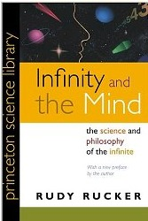
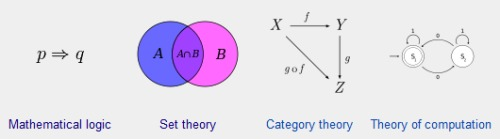
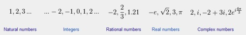
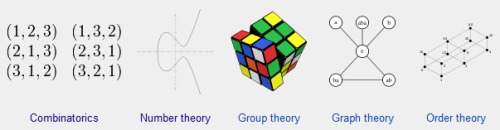
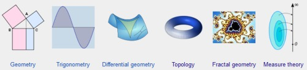
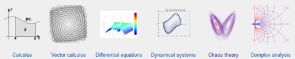
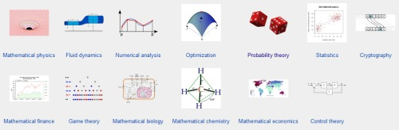
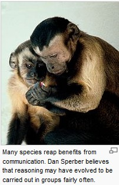
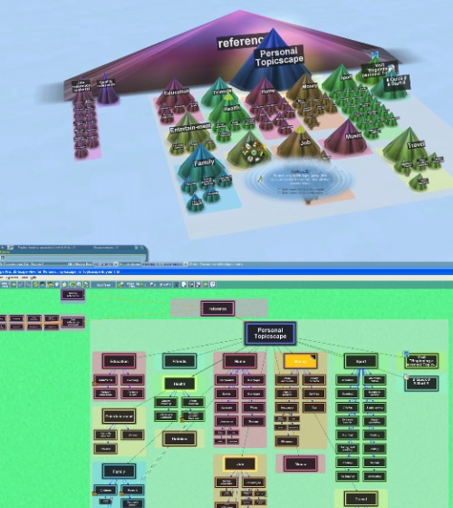
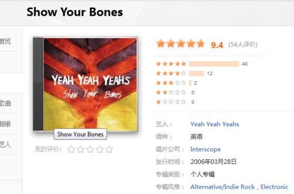

孙燕姿Stefanie，果断回到初中木桌子烧着香的那个房间，，黑色台灯，磁带录音机，日记本，大床
你们说什么，，音乐才是真真的时空胶囊
i'm going to leave you
ah, this is zhuangbility.. ha ha
一瞬间又自厌了
慢慢觉得数学比CS有意思——呃，不过现实地讲，选CS当专业比选数学当专业要靠谱那么点
理想只活在理想世界，，恩。。。。
http://blog.sciencenet.cn/blog-660333-632151.html
评论里那篇长的看着还行，，别的。。。我可以说高材生们你们的世界观忒朴素了点么？
魔戒I (2012.11.3)
午夜凶铃 (2012.11.14)
咒怨 (2012.11.14)
The Cove (2012.11.17)
咒怨2 (2012.11.19)
人类之子 (2012.11.21)
人造风景 (2012.11.22)
风声 (2012.11.26)
Stardust (2012.11.27)
The Dark Knight Rise (2012.11.29)
The Devil Wears Prada (2012.11.30)
Dracula (2012.12.1)
帝企鹅日记 (2012.12.1)
500 Days With Summer (2012.12.4)
Warrior (2012.12.4)
忠犬八公物语 (2012.12.6)
忠犬八公的故事 (2012.12.6)
Black Hawk Down (2012.12.7)
Stuart: A Life Backwards (2012.12.8)
Mulholland Dr (2012.12.8)
一九四二 (2012.12.9)
V for Vendetta (2012.12.9)
壁花少年 (2012.12.30)
遗愿清单 (2013.1.4)
Seal Team 6: The Raid nn Osama Bin Laden (2013.1.10)
Life of Pi (2013.1.14)
用心棒 (2013.1.22)
云图 (2013.1.30)
红辣椒 (2013.2.5)
千年女优 (2013.2.6)
未麻的部屋 (2013.2.6)
The Mist (2013.2.10)
Django Unchained (2013.2.15)
青蛇 (2013.2.22)
霸王别姬 (2013.2.27)
泰囧 (2013.3.1)
悲惨世界 (2013.3.27)
Perfume (2013.4.24)
我们俩 (2013.4.27)
毒战 (2013.5.8)
District 9 (2013.5.15)
北京遇上西雅图 (2013.5.15)
Simone (2013.5.18)
再见了我们的幼儿园 (2013.5.19)
告白 (2013.5.20)
The Negotiator (2013.5.22)
建国大业 (2013.5.24)
末代皇帝 (2013.5.29)
月亮熊 (2013.5.29)
中国合伙人 (2013.5.31)
寻枪 (2013.6.2)
坏未来 (2013.6.4)
万箭穿心 (2013.6.4)
春娇与志明 (2013.6.6)
死神来了 (2013.6.9)
Silent Hill (2013.6.9)
虎兄虎弟 (2013.6.10)
Project Nim (2013.6.10)
Rise of the Planet of the Apes (2013.6.10)
Orphan (2013.6.11)
青春梦工场 (2013.6.12)
Paul (2013.6.12)
Total Recall [1990] (2013.6.13)
Total Recall [2012] (2013.6.13)
Upside Down (2013.6.15)
遥远星球的孩子 (2013.6.17)
Temple Grandin (2013.6.21)
The People vs Larry Flynt (2013.6.22)
Catch Me If You Can (2013.6.23)
毒战 (2013.6.24)
我的小公主 (2013.6.25)
Pretty Baby (2013.6.27)
The Little Girl Who Lives Down The Lane (2013.6.28)
Carnage (2013.6.28)
2001 Space Odyssey (2013.6.29)
致我们终将逝去的青春 (2013.7.1)
吴清源 (2013.7.4)
The Grauate (2013.7.14)
The Croods (2013.7.18)
WallE (2013.7.27)
Her (2014-09-16 00:25:37)
《Infinity and the Mind》，两章完；看伤了，怕了都
如果敢说CS的水有。。。比如，2^1024深，NM数学的水深阿莱夫1啊
______
math is a religion
as you misunderstood religion, you too misunderstood math
you poor

这书看着跟科幻小说似的；想推荐，不知有没中文版
LIFE: SEEK FOR THE GREATERS
http://en.wikipedia.org/wiki/Mathmatics






http://en.wikipedia.org/wiki/Space
However, disagreement continues between philosophers over whether it is itself an entity, a relationship between entities, or part of a conceptual framework.
给跪了。。怀疑这辈子能不能琢磨出点新东西~~~~
http://en.wikipedia.org/wiki/Mathematical_maturity
http://en.wikipedia.org/wiki/Reasoning


略屌
http://en.wikipedia.org/wiki/A_Mathematician%27s_Apology
Exposition, criticism, appreciation, is work for second-rate minds. [...] It is a melancholy experience for a professional mathematician to find himself writing about mathematics. The function of a mathematician is to do something, to prove new theorems, to add to mathematics, and not to talk about what he or other mathematicians have done.
same for life, i felt
PS：爬wiki简直有点看小说的感觉了，amazing...
Some of Hardy's examples seem unfortunate in retrospect. For example, he writes, "No one has yet discovered any warlike purpose to be served by the theory of numbers or relativity, and it seems unlikely that anyone will do so for many years." Since then, the application of relativity was part of the development of nuclear weapons, while number theory figures prominently in public-key cryptography.
http://en.wikipedia.org/wiki/Nuclear_weapons
http://ja.wikipedia.org/wiki/%E6%A0%B8%E5%85%B5%E5%99%A8

well..
http://zh.wikipedia.org/zh/%E4%BB%A5%E7%9C%BC%E8%BF%98%E7%9C%BC
你们听见有话说：“以眼还眼，以牙还牙。”只是我告诉你们，不要与恶人作对。有人打你的右脸，连左脸也转过来由他打；有人想要告你，要拿你的里衣，连外衣也由他拿去；有人强逼你走一里路，你就同他走二里；有求你的，就给他；有向你借贷的，不可推辞。你们听见有话说：“当爱你的邻舍，恨你的仇敌。”只是我告诉你们，要爱你们的仇敌，为那逼迫你们的祷告，这样就可以作你们天父的儿子。
gfw草你爹啊，真烦
稀里哗啦了，尼玛啊。。。。。。。。。。。。。。。。
敢再邪恶点么？
Q_OBJECT
Q_PROPERTY
....
于是感觉今日的qt就像昨日的mfc —— 说明什么？我真地想说 c++ 落后了，，
如果一门语言只有通过不断地 hack 来支持新的想法新的技术的话，该退下了
oj上做算法作业，3/4搞定，剩下一个runtime error....
你懂的，，从python换回c++，瞬间感觉回到了石器时代。。有木有
黛青塔娜才听两首，已然不行了。。。@寂静的天空&雪山
竟然研究开主谓宾定状补来了——el需要
you.dont.remember
change.old.size
http://en.wikipedia.org/wiki/Template:Window_managers
http://en.wikipedia.org/wiki/WIMP_%28computing%29
http://en.wikipedia.org/wiki/Post-WIMP
WIMPs are usually pixel-hungry, so given limited screen real estate they can distract attention from the task at hand.
http://en.wikipedia.org/wiki/Zooming_user_interface
When the level of detail present in the resized object is changed to fit the relevant information into the current size, instead of being a proportional view of the whole object, it's called semantic zooming.
http://en.wikipedia.org/wiki/3D_Topicscape

http://www.chronozoomproject.org/
我日，梁博摇滚在哪了？
2012-10-03 17:24
记得以前看过这个：
http://tieba.baidu.com/shipin/bw/video/play?kw=%D2%A6%D5%FE&v_id=4c34c63cc8561233ba44362e
http://tieba.baidu.com/shipin/bw/video/play?kw=%D2%A6%D5%FE&v_id=99dff91d8acfa82b4d252d4e
http://tieba.baidu.com/shipin/bw/video/play?kw=%D2%A6%D5%FE&v_id=eb3a4f3523e9599b690ba739
http://tieba.baidu.com/shipin/bw/video/play?kw=%D2%A6%D5%FE&v_id=ad63b3c24c0d87eebde2a3ef
http://tieba.baidu.com/shipin/bw/video/play?kw=%D2%A6%D5%FE&v_id=c234dab9ddb7d8d4f516cc39
哎呦，打错个单词..

that's my Google!~
just mark, do NOT follow
google搜latex的图片，NM。。。
sql最早摸错了书，看得毷氉，
之后找对，神清气爽，
看到现在，join join join... 又略晕乎了
不过很好，第一遍跋涉过去第二遍回逛已然目测轻松很多
phew...
张悬的歌（除了最早宝贝的那张my life will）初听不入，但多听几遍实在是很心水，。。。哎呀，这感觉形容不出来啊
@神的游戏

许久以后再来听非常爽